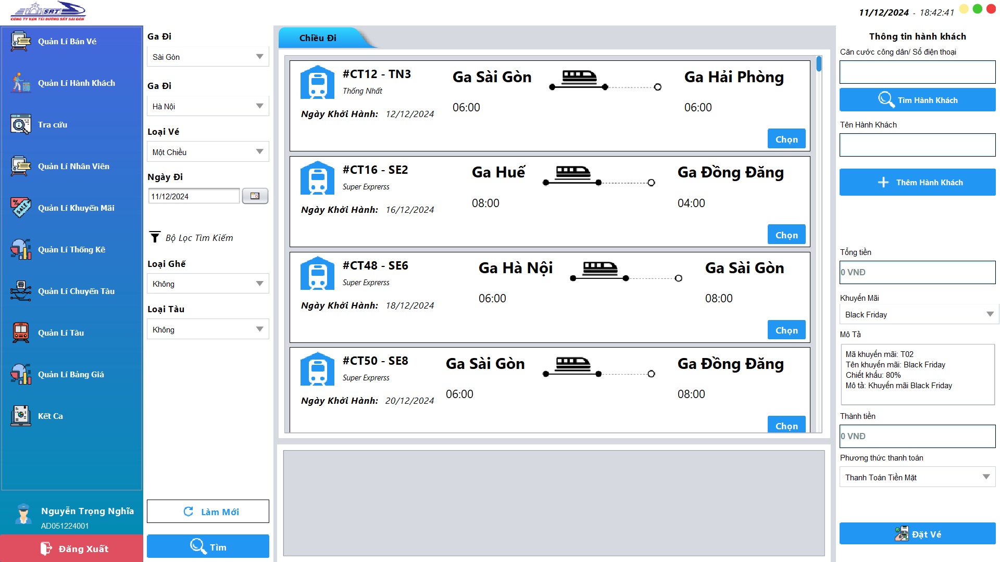
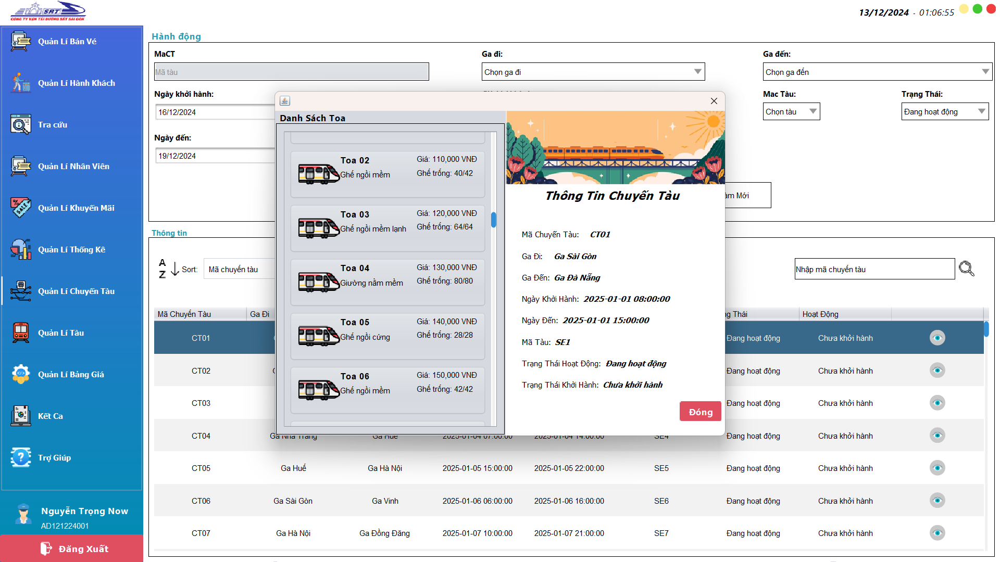
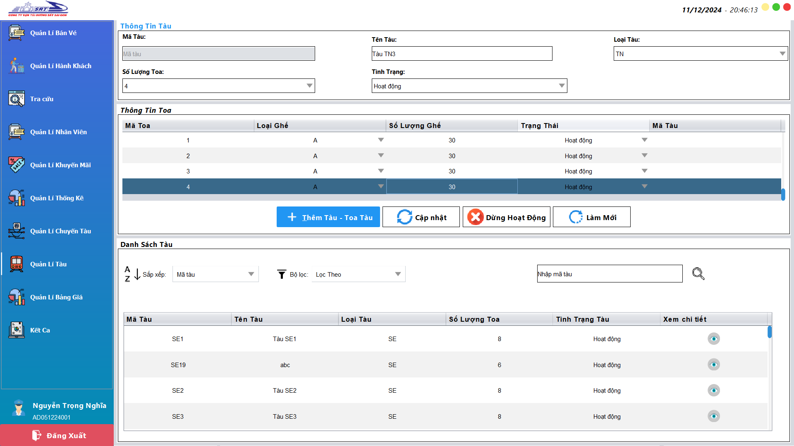

CHỨC NĂNG CHUNG
I. Đăng nhập
Bước 1: Nhập thông tin đăng nhập như tên tài khoản và mật khẩu vào
các ô tương ứng (Có thể nhân hiển thị mật khẩu để kiểm tra mật khẩu nhập vào)
Bước 2: Nhấp vào nút đăng nhập để tiến hành đăng nhập nếu thông
tin bị sai thì sẽ hiện ra thông báo yêu cầu nhập lại.
Bước 3: Bấm vào nút hiện mật khẩu để hiển thị mật khẩu đã nhập
vào. Và nhấn đăng nhập
II. Quên mật khẩu
Bước 1:Nhấn vào quên mật khẩu sau đó chương trình sẽ hiện ra form
điền thông tin để khôi phục mật khẩu.
Bước 2: Nhập đầy đủ thông tin vào ô để khôi phục mật khẩu..
Bước 3: Nhấn khôi phục mật mật khẩu.
III. Đăng xuất
Bước 1: Chọn nút đăng xuất màu đỏ ở cuối thành navbar.

IV. Đổi mật khẩu
Bước 1: Trong giao diện nhấn vào phần thông tin ở trên nút đăng
xuất.
Bước 2: Nhấn vào đổi mật khẩu ở khung hiển thị thông tin, sau đó
form để điền thông tin để thay đổi mật khẩu. .
Bước 3: Nhập đầy đủ các thông tin để đổi mật khẩu.
V. Sắp xếp chuyến tàu
Bước 1: Chọn quản lý chuyến tàu ở menu bên phải.
Bước 2: Chọn tiêu chí sắp xếp ở thanh trên bảng chứa chuyên tàu
kết quả sự tự động sắp xếp sau khi chọn tiêu chí sắp xếp xong.

VI. Lọc chuyến tàu
Bước 1: Chọn quản lý chuyến tàu ở menu bên phải.
Bước 2: Chọn tiêu chí lọc ở thanh lọc trên bảng chứa chuyên tàu
và nhân enter sau đó kết quả tự động trả về khi chọn tiêu chí lọc xong.

VII. Xem chi tiết chuyến tàu
Bước 1: Chọn quản lý chuyến tàu ở menu bên phải.
Bước 2: Ở bảng chứa danh sách cách chuyến tàu nhấn vào biểu tường
hình con mắt để xem ci tiết chuyến tàu.

VIII. Thêm tàu và toa tàu
Bước 1: Chọn quản lý tàu ở menu bên phải.
Bước 2: Nhập đầy đủ các thông tin như tên tàu, loại tàu, tình
trạng, số lượng
Bước 3: Sau khi chọn số lượng toa cần thêm thì ở bảng "Thông tin
toa" sẽ hiện số lượng toa tàu muốn thêm

Bước 4: Lựa chọn loại ghế và nhập số lượng ghế của mỗi toa
Bước 5: Nhấn thêm tàu và hệ thống sẽ hiện thị thêm tàu thành công.
IX. Cập nhật tàu và toa tàu
Bước 1: Chọn quản lý tàu ở menu bên phải.
Bước 2: Chọn tàu cần cập nhật ở bảng bên dưới
Bước 3: Sau đó nhập thông tin tàu muốn chỉnh sửa vào các ô và tùy
chỉnh thông tin ở bảng thông tin toa nằm ở giữa.
Bước 4: Nhấn cập nhập và nhận thông báo cập nhật thành công

X. Dừng hoạt động tàu và toa tàu
Bước 1: Chọn quản lý tàu ở menu bên phải.
Bước 2: Chọn tàu cần dừng hoạt động ở bảng
Bước 3: Nhấn dừng hoạt động và nhận thông báo ở màn hình

XI. Cập nhật giá cho chuyến tàu
Bước 1: Chọn quản lý bảng giá ở menu bên phải.
Bước 2: Chọn chuyến tàu cần cập nhật giá
Bước 3: Chọn toa tàu cần cập nhật giá, có thể giữ crtl để
cập nhật giá của nhiều toa cùng lúc.